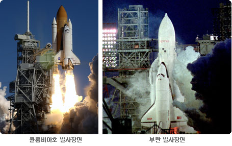

미국 NASA에서 만든 우주로 나간 최초의 우주왕복선. 그러다 보니 오비터 중 가장 무거워 디스커버리에 비해서 약 3.1톤, 챌린저 참사 이후, 새로 제작된 엔데버보다 3.6톤 정도 무겁다. 첫 비행은 STS-1. 초대 사령관은 제미니 2회, 아폴로 달 탐사 2회에 빛나는 존 영. 마지막 사령관은 릭 허즈번드. NASA 역사상 최초로 여성 사령관이 지휘한 STS-93 미션에서 찬드라 엑스선 관측선을 전개한 궤도선이다. 1981년 4월에는 인간 신경계에 미치는 무중력상태의 영향에 관해 실험할 목적으로 발사되어 16일간 우주에 머무르면서 불면증, 불안정 등에 대한 실험을 하기도 했으며, 귀뚜라미, 물고기, 쥐, 달팽이 등 2,000여마리의 동물이 함께 탑승한뒤 실험 대상이 되면서 '우주 노아의 방주' 라는 별명을 얻기도 했다. 또한 1999년에는 STS-93 미션에서 찬드라 엑스선 관측선을 발사하고 2002년 STS-109 미션에서는 허블 우주 망원경의 4차 보수를 진행하기도 했다. 당초 STS-144 미션으로 허블 우주 망원경을 다시 지구로 회수하는 임무도 진행할 예정이였지만 후술할 사고로 기체가 파괴되었고 우주왕복선 프로젝트 역시 STS-135로 조기 종료되며 없던 일이 되었다.
